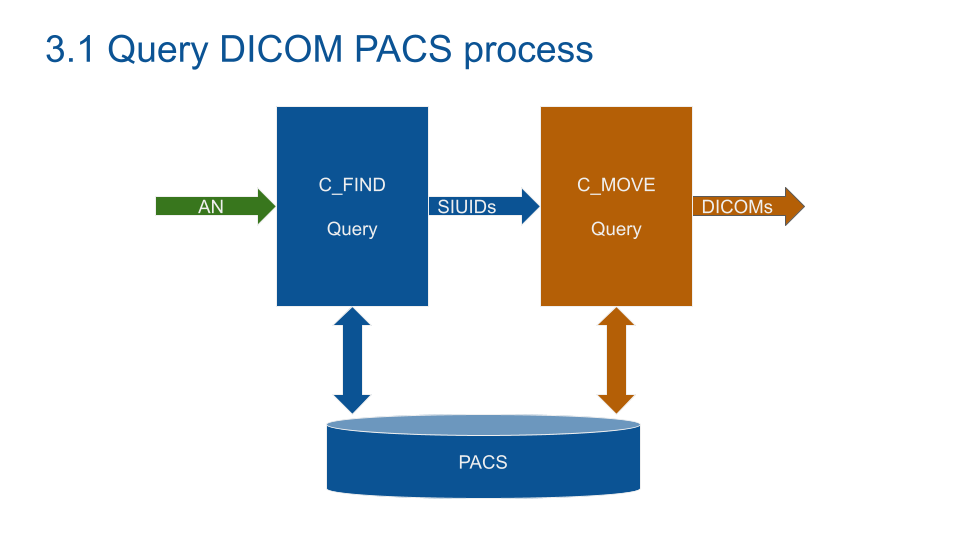

DICOM
EXTRACT DATA FROM PACS

1 ABSTRACT
Scraping DICOM from a PACS is a hard process. The lack of documentation and examples make this kind of data mining difficult. The Goal of this work is to show you the basic idea behind DICOM and how to get these data. Some pitfalls will be described.
2 MOTIVATION
Digital Imaging and COmmunication in Medicine (DICOM) is the most used model to store and query medical data. Understanding DICOM will open the door to the medical data world.
DICOM MODEL
DICOM model is based on nested data. You can see a "first layer" Data Element (patient_name). A DICOM object can be nested into a Sequence in order to save multiple Sequences of a DICOM Object (Like a multi sequence IRM with multiple images per Object). Any Data can be saved using a private tag (like a movie in MP4).
DICOM DATA ELEMENTS
DICOM Data Element as encoded as a dictionary, Key: address of the element, Value: Value group.
Value group is composed of a value representation (What is this data: here Person Name), Value Length and Value (the data itself).
As a result, DICOM format is very adaptable but harder to access. As Example, the OS is not natively compatible, you need a special viewer).
DICOM BASIC EXCHANGE
Communication is embedded in DICOM format (the COM of DICOM). The request system works as the TCP/IP protocol. The client asks the server for a service.
DICOM REQUEST MESSAGE MODEL
The communication configuration is embedded into the DICOM Associate Request Message. The Presentation Context contains the transfert syntax which is the type of data to transfert (MRI, US, Scanner...)..
As an example: a radiologist viewer asks the printer for a US print. The printer validates the transfert if it can print a US image.
The Service Class User SCU and Service Class Provider set the role of each partner. With the same example, the SCU is the viewer (ask for a service) and the printer is the SCP (provide a print service).
DICOM EXCHANGE PROTOCOL
After the association establishment, the data blocks are sent. An Acknowledgement closes the end of the transaction.
Note: end of transaction process is embedded in PyNetDicom. If you build your own communication process don't forget to close the service without response (after a while).
PACS QUERY PROCESS
What I've learned for real world PACS:
1/ Querying a PACS with the StudyInstanceUID (study identifier) from the RIS fails most of the time. It's usually due to PACS/RIS segmentation and server migrations.
2/ PACS query system with DICOM query is limited. It's not possible to select an exam type (arthro scanner).
3/ Query the PACS with Accession Number can fail (testing result with around 20% of empty DICOM).
The process I used:
1/ Query the RIS and apply the filter you're interested in (usually SQL) and get back the Accession Number (examen identifier). With your list of AN. (Note: an AN is a sensible Data).
2/ Query the PACS with the AN to get all StudyInstanceUID linked (C-FIND).
3/ Query the PACS with the StudyInstanceUID (C-FIND).
4/ The AN can be linked to study you don't need. Example: an AN of a mammography can be composed of the first mammography images, plus US images. Filter DICOM you don't need.
C-MOVE PROCESS
Most of the time, C-GET won't work. C-FIND asks the PACS to send back the DICOM you are looking for. After the association establishment, open a listen service (STORE-SCP) to receive the DICOM from the PACS.
CODING DICOM
Understanding how a DICOM dataset was the first step to achieve the mining.
2 great libraries: PyDicom and PyNetDicom, will make mining and processing easy.
The first part is the basic C_FIND code to get SIUDs from AN.
The second part is the C-MOVE to get DICOM from SIUID
By Benoit Pont
Further reading:
Digital Imaging and Communications in Medicine (DICOM)
Special thanks to all the Gleamer team.